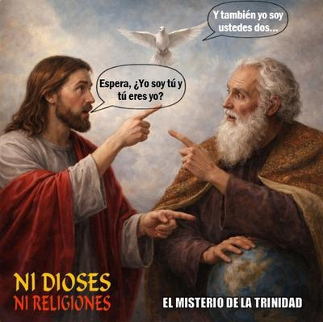

La llamada «Santísima Trinidad» es probablemente la creencia más absurda del cristianismo —y quizás la que ha provocado más acrobacias mentales. Según esta doctrina, existe un solo «Dios» que es simultáneamente tres personas distintas: el Padre (el mismo dios Yahvé de la Biblia), el Hijo (Jesús convertido en Cristo) y el Espíritu Santo, una especie de alma divina que suele manifestarse como paloma (Mateo 3:16; Marcos 1:10; Lucas 3:22; Juan 1:32). Sí, son tres personas, incluido este singular espíritu de vocación aviar que se autopercibe como paloma (sin ser un divino therian), pero las tres son el mismo «Dios».


Según esto, Jesús es él mismo, a la vez que es su propio padre y también el emplumado espíritu. O sea, cada una de esas personas es igual a sí misma y a las otras dos, pero a la vez son distintas. Tres son uno y uno es tres: 3=1, según la misteriosa aritmética divina. ¿Puede haber algo más absurdo?
Los teólogos cristianos lo expresan con solemnidad: son «tres personas en una sola esencia». Pero, ¿lo hace eso comprensible? El detalle es que ni los mismos evangelios resuelven esta contradicción, porque Jesús a veces parece identificarse con «Dios Padre», como en el Evangelio de Juan, donde declara: «Yo y el Padre uno somos» (Juan 10:30). Pero en otros pasajes admite que el Padre sabe cosas que él desconoce, como el día del fin del mundo (Mateo 24:3). Además de que ora a «Dios» como si fuera otra entidad distinta (Mateo 26:39; Lucas 22:41-42, Juan 17:1-26). Y en uno de los momentos más dramáticos de la crucifixión exclama: «Dios mío, Dios mío, ¿por qué me has abandonado?» (Marcos 15:34, Mateo 27:46, reproduciendo lo que dice el Salmo 22:1). Y si Jesús es «Dios», ¿a quién le está reclamando?
Durante los primeros siglos del cristianismo estas contradicciones generaron un problema teológico gigantesco. La Iglesia primitiva no tenía una doctrina clara, porque la Trinidad fue una construcción posterior.
Pero el gran debate estalló en el siglo IV, cuando dos posiciones principales se enfrentaron: ¿Jesús fue creado o es eterno? Arrio, un líder cristiano de Alejandría, sostenía que Jesús había sido creado por «Dios», y por tanto, no podía ser igual al Padre. Mientras que Atanasio, también líder de la misma ciudad, defendía que el Hijo era eterno e igual a «Dios», y por tanto, de la misma «sustancia divina». Una discusión que se convertiría en una guerra doctrinal, con exilios, persecuciones y disturbios, entrando también en escena un personaje inesperado: el emperador romano Constantino I.
En el año 325, Constantino convocó a los líderes de las comunidades cristianas del Imperio (conocidos como «obispos», del griego epískopos, que significa «supervisor» o «vigilante»), para resolver aquel conflicto que amenazaba la estabilidad de su gobierno. Así, el Primer Concilio de Nicea reunió a 318 obispos, aproximadamente el 18 % de todos los del imperio, por lo que la representación fue mínima. Pero aun así, el emperador presionó intensamente para que se adoptara una fórmula doctrinal que unificara a la Iglesia. Y finalmente la mayoría votó a favor de la posición de Atanasio, siendo Jesús declarado «de la misma sustancia» que el Padre. O sea, Jesús también era «Dios».
Estos obispos fueron compensados por Constantino, convirtiéndolos en colaboradores de la administración imperial, y otorgándoles fondos públicos para construir templos. Además de que les confió tareas de asistencia y protección social. Arrio, en cambio, representante de la postura disidente, fue condenado y exiliado. Incluso dos obispos que lo apoyaban fueron también desterrados. Además, sus escritos fueron destruidos, decretando Constantino que quien poseyera textos arrianos podría ser condenado a muerte.
Nació así, oficialmente, la primera versión del credo cristiano, que afirmaba la divinidad de «Cristo». Pero la historia no terminó ahí. La controversia continuó durante décadas. Las facciones se alternaban el poder, dependiendo de qué emperador gobernara. El mismo Constantino, curiosamente, terminó rehabilitando a Arrio poco antes de morir, cuando además fue bautizado en su lecho de muerte por un obispo arriano, es decir, por un teólogo que negaba la doctrina que el concilio había proclamado. En realidad, Constantino fue siempre un adorador del Sol Invictus (Sol Invicto), especialmente en su juventud, reflejándolo en sus monedas y símbolos oficiales, hasta cerca del año 325, en que se celebró el Concilio de Nicea.
Aquel caos doctrinal persistió hasta que otro emperador intervino. En el año 381 Teodosio I convocó el Primer Concilio de Constantinopla. Pero esta vez el procedimiento fue más sencillo: sólo invitó obispos trinitarios. Y la votación fue predecible. Además, se añadió allí oficialmente al Espíritu Santo como tercera persona de la divinidad. El plumífero espíritu también era «Dios».
La Trinidad quedaba completa formalmente. Pero si alguien pensaba que la doctrina quedaría clara después de tanto esfuerzo, se equivocó. Porque con el paso de los siglos surgieron nuevas disputas, ahora sobre cuál era la procedencia del Espíritu Santo. Y a raíz de esto surgieron tres posturas que todavía prevalecen:
La Iglesia occidental añadió al credo la cláusula latina «Filioque» («y del Hijo»), afirmando que el Espíritu Santo procede del Padre «y del Hijo».
La Iglesia Ortodoxa, por su parte, sostuvo que el Espíritu Santo procede sólo del Padre.
Mientras que algunas iglesias orientales católicas, se quedaron afirmando que el Espíritu Santo procede del Padre «por medio del Hijo», como era la idea original.
Tres explicaciones distintas actualmente vigentes, para el mismo dogma fundamental.
Con todo esto uno se pregunta: ¿Cómo es que hubo gente que aceptara una idea tan absurda como la Trinidad? Pero resulta que en aquella época el concepto no era tan extraño. En el mundo antiguo ya eran conocidas ciertas trinidades religiosas, como el Trimurti en el hinduismo, la Tríada Capitolina en Roma, y Osiris–Isis–Horus en Egipto. Por lo que, para muchos conversos procedentes del paganismo, la idea de una divinidad triple no era tan extraña. Así que el cristianismo, como tantas otras veces, no eliminó completamente elementos religiosos previos; los adaptó.
De cualquier forma, se trata probablemente del dogma más absurdo del cristianismo, pero cuando las explicaciones lógicas fallan, la teología suele recurrir a una fórmula clásica: «Es un misterio divino», algo que tu limitada mente no puede comprender, sólo «Dios». Una estrategia eficaz para preservar el dogma, sin tener que aclararlo.
En fin, en una época en que cualquiera puede consultar la historia del cristianismo en minutos, sigue siendo sorprendente que una doctrina tan absurda, confusa y contradictoria continúe siendo considerada la piedra angular de la fe. Quizá la explicación sea simple: las creencias religiosas, una vez institucionalizadas, sobreviven mejor por tradición que por coherencia.
[Godless Freeman]
Comentarios
Comments powered by Disqus